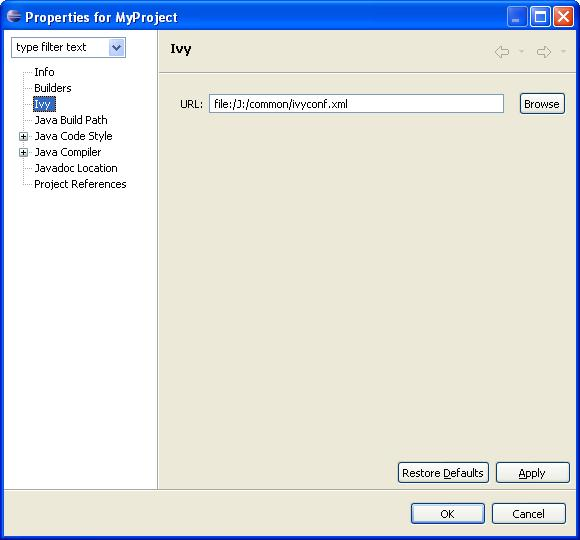

IvyDE can be considered as the merge of two tools: <ul> <li><a href="editor.html">Ivy xml files Editor</a>: creation wizard, html preview and completion for Ivy xml tag, attributes but also attributes' values.</li> <li><a href="cp_container.html">Class path container</a>: Automatic downloads, access "resolve" task from your IDE</li> </ul> <h1>Content</h1> <ul> <li><a href="#install">Installation</a></li> <li><a href="#pref">Eclipse Preference</a></li> <li><a href="#project_pref">Project Preference</a></li> </ul> <h1><a name="install">Plugin installation</a></h1> IvyDE has not yet been released within the Apache Software Foundation. For the moment you can use the old location of IvyDE for installation: <ul> <li>the update site : http://update.jayasoft.org/ </li> <li><a href="download.html">download</a> the binaries and unzip it in your eclipse root folder</li> </ul> <h1><a name="pref">Eclipse Preference Page</a></h1> <img src="images/pref.jpg"/><br/><br/><br/> <ol><b>Preference fields:</b> <li> Ivyconf URL : specify here the path to your ivyconf file. Leave it blank to use ivy default resolvers</li> <li> Retrieve option : specify here if you want ivy to do a retrieve after the resolve.<br/> If you check retrieve you must provide a the retreive pattern. Check <a href="ivy/doc/use/retrieve.html">ivy documentation</a> for pattern explanation. </li> <li> Organisation: your company name for ivy editor completion </li> <li> Organisation Url: your company web site url for ivy editor completion </li> </ol> <h1><a name="project_pref">Project Preference Page</a></h1> <br/><br/><br/> <ol><b>Preference fields:</b> <li> URL : specify here the path to your ivyconf file in scope of project. Leave it blank to use ivyconf file defined in eclipse properties (see <a href="ivyde.html#pref">eclipse properties</a>) or use "default" to use ivy default resolvers</li> </ol>